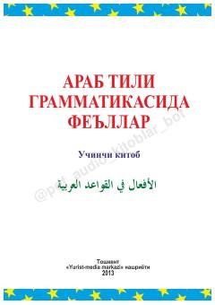

ATArab tili fe'llari va ularning qo'llanilishi haqida boshlang'ich darslik.
Ushbu o'quv qo'llanma arab tili grammatikasidagi fe'llar mavzusiga bag'ishlangan bo'lib, seriyaning uchinchi kitobidir. Kitobda fe'llarning zamonlari, shaxs-son qo'shimchalari va ish-harakatni ifodalash usullari sodda misollar yordamida tushuntirilgan.